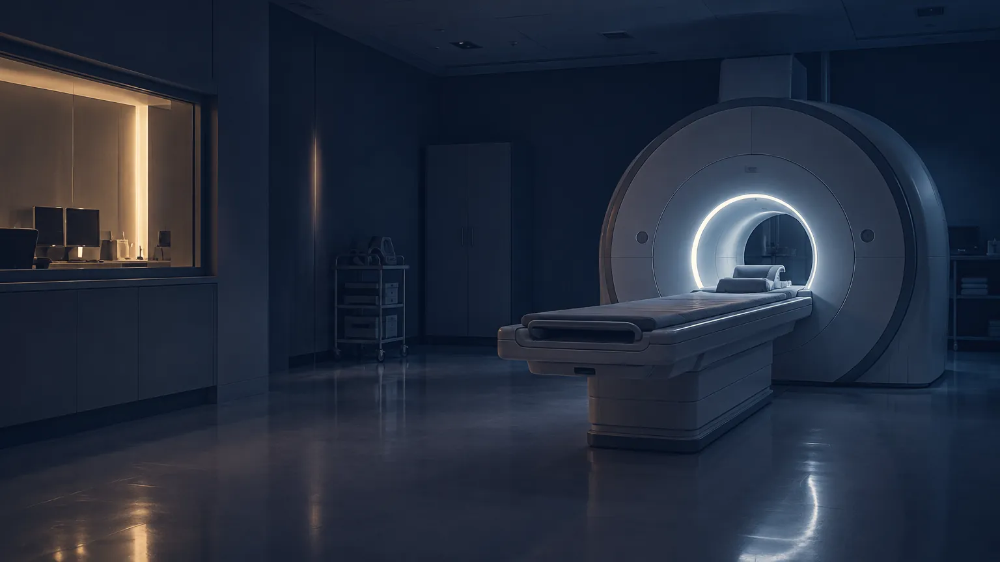
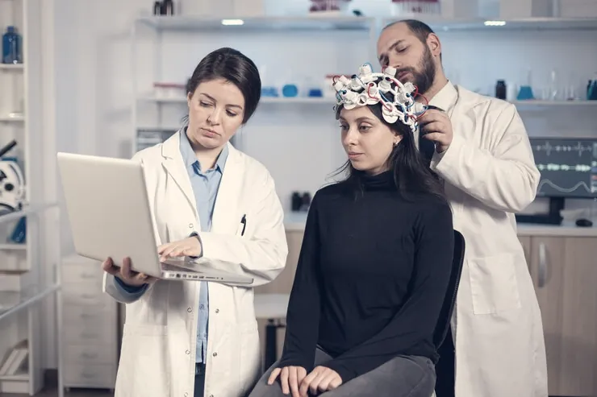
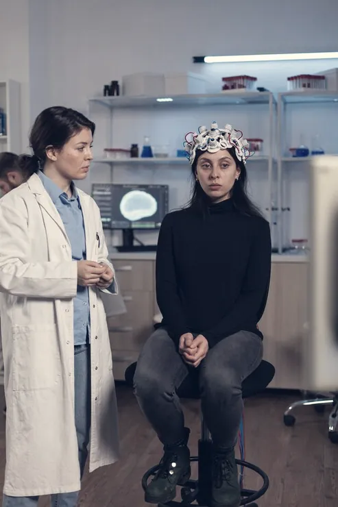
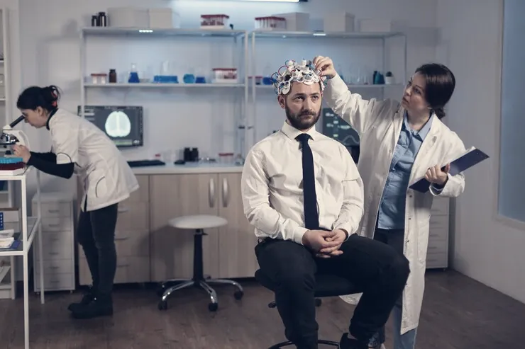
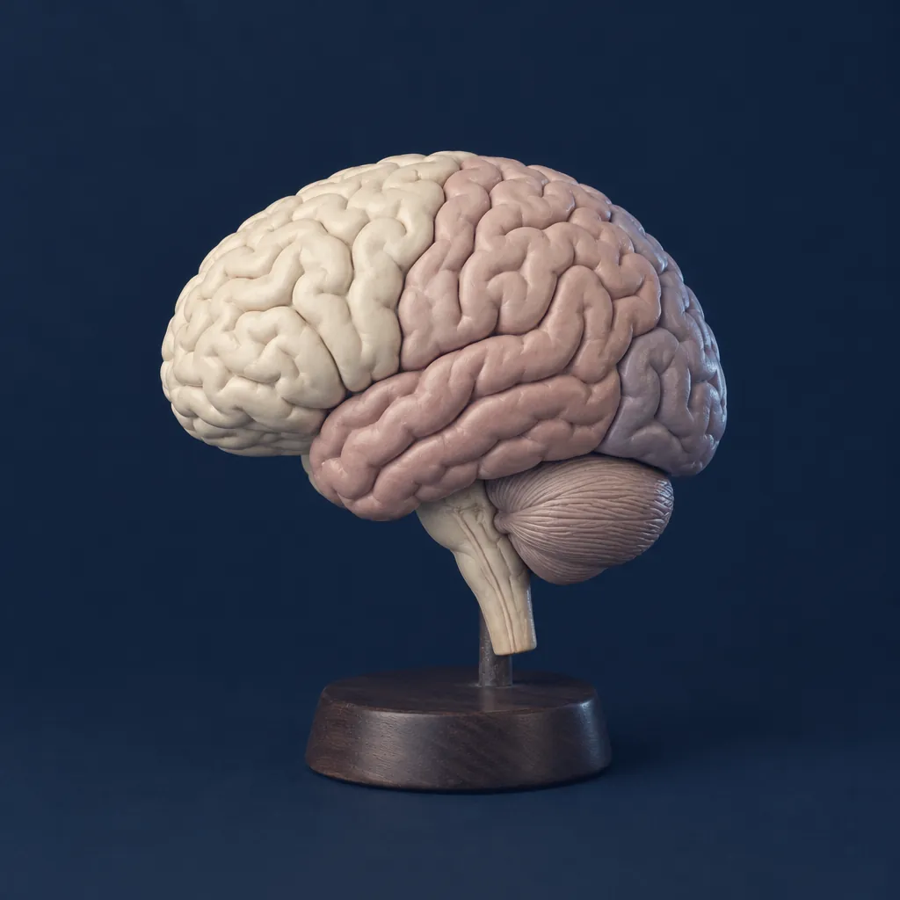
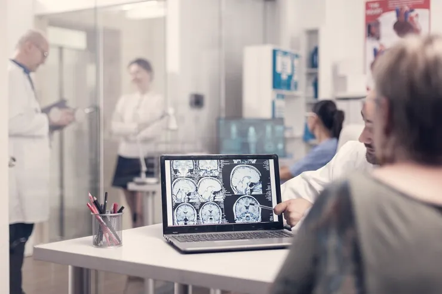

01
Cefaleia e enxaqueca
Diário de dor, gatilhos e tratamento preventivo. Bloqueios e toxina botulínica quando indicados.

Neurologia clínica · Cambuí, Campinas
Dor de cabeça que não passa, formigamento, esquecimento, crises. A consulta começa ouvindo a sua história com calma. Os exames vêm depois, só os que fizerem sentido.
[01] Sobre
Uma clínica pequena, de propósito. Cada paciente tem uma neurologista de referência, consulta de 50 minutos e retorno marcado antes de sair.
[02] Atendimentos
Diário de dor, identificação de gatilhos e tratamento preventivo quando as crises passam de quatro por mês. Bloqueios anestésicos e toxina botulínica quando indicados.
Marcar consultaDiário de dor, gatilhos e tratamento preventivo. Bloqueios e toxina botulínica quando indicados.

Diagnóstico com EEG, ajuste fino de medicação e orientação para a família.

Testes cognitivos, investigação de causas tratáveis e plano para o cuidador.

Insônia, sonolência diurna, pernas inquietas e narcolepsia, em parceria com a polissonografia.
EEG de rotina e prolongado, feito aqui e laudado pela mesma equipe.
[03] Mapa dos sintomas
Escolha o que você sente. O mapa acende a região do cérebro mais ligada a esse sinal e mostra como a gente investiga.
Região · lobo frontal e meninges
Na maioria das vezes é uma cefaleia primária, como enxaqueca ou tensional. Investigamos padrão, frequência e sinais de alerta antes de pedir exame de imagem.
Exames que podem ajudarDiário de dor · ressonância em casos selecionados

Frontal Parietal Occipital Temporal Cerebelo TroncoConteúdo educativo. Só a consulta define a causa de um sintoma.
[04] Exames no consultório
Quem pede o exame é quem lê o resultado. Sem fila em laboratório, sem laudo genérico chegando por e-mail dias depois.

Reunião clínica às quartas
[05] Equipe
Neurologistas com título de especialista e uma área de foco cada. O prontuário é um só.
Cefaleia e dor neuropática
Epilepsia e neurofisiologia
Memória e neurologia cognitiva
[06] Urgência
Peça para sorrir. Um lado da boca caiu?
Peça para erguer os dois braços. Um deles cai?
Peça para cantar uma frase. A fala sai enrolada?
Qualquer sinal: ligue 192 na hora e anote o horário.
[07] Dúvidas
Não. No particular você agenda direto. Alguns convênios pedem guia; a recepção confirma no agendamento.
Não dói. Lave o cabelo na véspera, sem creme ou óleo. Em alguns casos pedimos para dormir menos na noite anterior; avisamos antes.
Dor súbita e muito forte, a pior da vida, acompanhada de febre, rigidez na nuca, fraqueza ou confusão. Nesses casos, procure um pronto-socorro.
Atendemos a partir dos 14 anos. Para crianças menores indicamos colegas de neuropediatria.
Pode e, em queixas de memória, recomendamos. Quem convive com o paciente ajuda a contar a história.
Sim, para retornos e revisão de exames. A primeira consulta é presencial, porque o exame neurológico é parte dela.
[08] Agendamento
A recepção responde em até 1 hora útil e encaixa você com a neurologista da área certa.
Marcar pelo WhatsApp